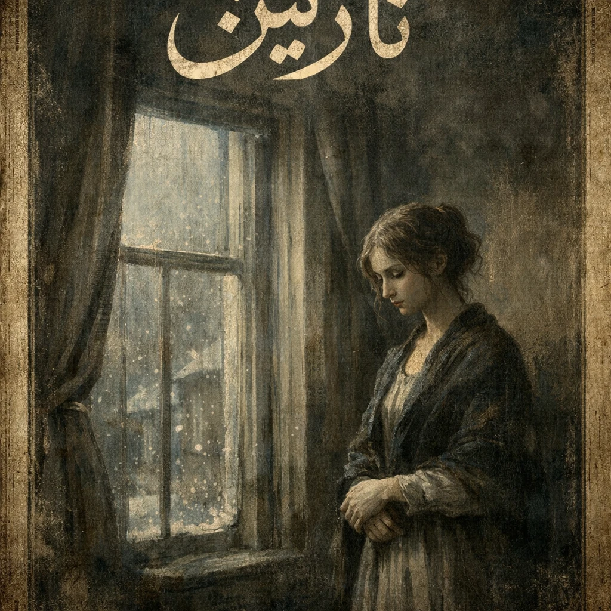

علی ترکمان پری
برنامهنویس فرانتاند (Front-End Developer)
درباره من
من یک برنامهنویس فرانتاند با انگیزه هستم که پیشزمینه جالبی در هنر آشپزی
و مدیریت رستوران دارم. تجربه سالها کار به عنوان سرآشپز و مدیر، به من یاد
داده است که چگونه در شرایط پرفشار به خوبی عمل کنم. من علاقه بسیار زیادی به
کار در تیمهای قوی دارم و فردی کاملاً منظم، هماهنگ با تیم و گوش به فرمان
اصول و قواعد سازمان هستم. اکنون با اشتیاق فراوان در حال یادگیری و توسعه
مهارتهای برنامهنویسی خود در مسیر فولاستک میباشم.
سوابق کاری
-
سرآشپز و مدیر رستوران
مدت زمان: ۷ سال مداوم
توضیحات: مدیریت کامل امور رستوران، رهبری تیم آشپزخانه و حفظ کیفیت خدمات.
-
نیروی کار (ساده) - شرکت داروسازی
مدت زمان: ۱ سال
توضیحات: آشنایی با محیطهای کارخانهای و رعایت دقیق پروتکلهای سازمانی.
تحصیلات و دورهها
-
دانشجوی دورههای تخصصی برنامهنویسی فرانتاند (Front-End) و فولاستک
(Full-Stack)
- دیپلم برنامهنویسی پایگاه داده
مهارتها
- برنامهنویسی فرانتاند (HTML, CSS, JavaScript و ...)
- زبان انگلیسی (سطح متوسط)
- روحیه کار تیمی بالا و انطباقپذیری با قوانین سازمان
- مدیریت زمان و رهبری تیم (به واسطه سابقه مدیریت رستوران)
- هنر آشپزی حرفهای
راههای ارتباطی